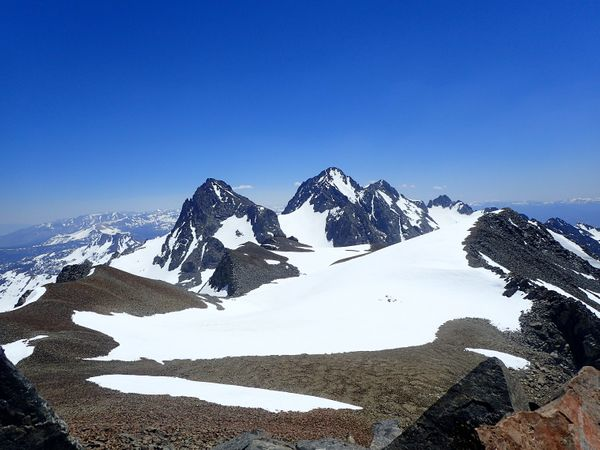
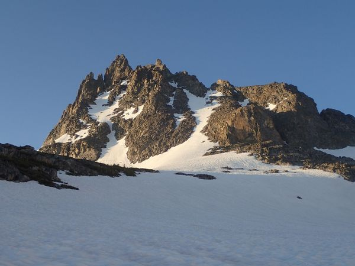
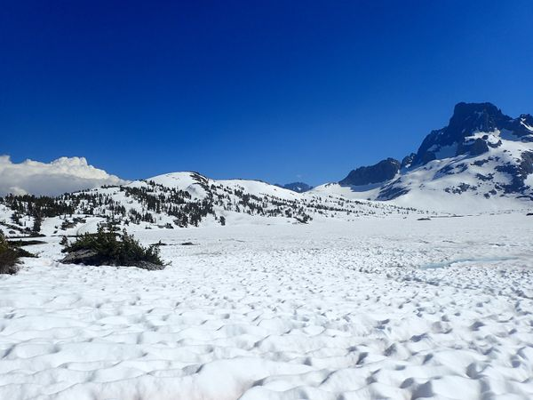

Hiking Out - North Glacier Pass Trip There was a waterfall on the rocks above camp from the snowmelt and after breakfast I headed back across the suncups along Thousand Island lake to get to the trail. 2017 Adventure North Glacier Pass Trip Ritter Range
Electra Peak - North Glacier Pass Trip I decided to do the unnamed peak between Mt. Rodgers and Electra Peak first, and then if there was time, go over and do Electra Peak as well. 2017 Adventure North Glacier Pass Trip Peak Ascents Ritter Range
Mt. Rogers - North Glacier Pass Trip Roger's Peak is at the very end of the North Fork of the San Joaquin river, from camp I headed up stream on the snow having to be careful where I crossed as I could see the river flowing below camp. 2017 Adventure North Glacier Pass Trip Peak Ascents Ritter Range
 Mt. Davis - North Glacier Pass Trip The day after climbing Mt. Ritter was mostly a rest day. I got up late and headed for Mt. Davis around noon. I packed my gear and hiked to the west end of Lake Catherine where I took some photos and left my big back pack behind. 2017 Adventure North Glacier Pass Trip Ritter Range Peak Ascents
Mt. Ritter - North Glacier Pass Trip 3 years before this trip, I had tried to climb Mt. Ritter and failed. Now I was back with better gear and a better idea of the route. 2017 Adventure North Glacier Pass Trip Peak Ascents Ritter Range
 Banner Peak - North Glacier Pass Trip From there it was an easy walk up to the top of the saddle on the glacier, while I could see cracks in the glacier on the side next to Mt. Ritter, there were no cracks or crevasses on the Banner Peak side and it was fairly flat. 2017 Adventure North Glacier Pass Trip Ritter Range Peak Ascents
 Hiking into Thousand Island Lake - North Glacier Pass Trip After a doing Gibbs and Dana, I took a rest day and then got my permit from the Forest Service office at Mono Lake for a one week trip into the Ansel Adams Wilderness to do some peak bagging in the Ritter Range. 2017 Adventure North Glacier Pass Trip Ritter Range